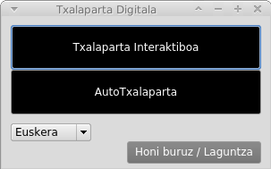
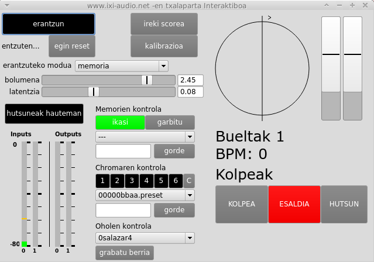
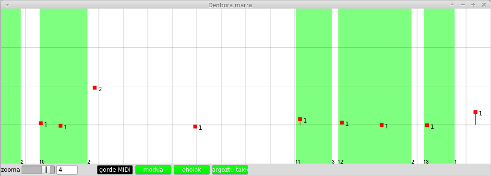
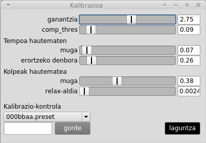
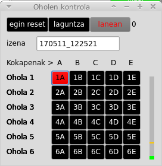

2017-05 alpha
Euskera | Castellano
Txalaparta digitala izeneko programak txalapartaren erritmoak ikertu, eta sistema digital batera
itzultzen ditu. Hasieran, Enrike Hurtadok egindako doktoregoko tesiaren zati bat izan zen
(www.ixi-audio.net/txalaparta)
Txalaparta digitalak bi zati desberdin hauek ditu:
- Txalaparta interaktiboa
- Autotxalaparta
Txalaparta interaktiboa deskribitzen duten demo batzuek:
Demo orokora
https://youtu.be/pmcTa1M2KVQ?list=PLauBVgFtMcLAdB0HnCBA1hSvtiV8IRgCi
Demo oholen hautematea (Chroma)
https://youtu.be/Ji1qTiHRBKU?list=PLauBVgFtMcLAdB0HnCBA1hSvtiV8IRgCi
(Txalaparta zer den ez badakizu, ikus:
https://en.wikipedia.org/wiki/Txalaparta
https://www.youtube.com/playlist?list=PLauBVgFtMcLDCSNNLCngm0BtBas2SsFB7 )
Edukia:
- Autotxalaparta
- Txalaparta Interaktiboa
- Nola funtzionatzen duen
- Erantzuteko modua eta memoria
- Memorien kudeaketa
- Chromaren kontrola
- Erritmoaren kalibrazioa
- Taulen kudeatzailea
- Hutsuneak hautematea
- Latentzia zuzentzea
- Sartu eskuz zure taulen soinuak (zure kabuz grabatuta)
- Windowsen erabiltzaileentzako oharrak
- Mac-en erabiltzaileentzako oharrak
++ Autotxalaparta ++
Programa honek automatikoki sortzen ditu txalapartaren erritmoak dituen bi parteak. Kontroleko interfazetik,
haren ezaugarriak kontrolatu ahal izango ditugu. Interpretatzaile baten partea itzali ahal duzu (ttakunarena
edo herrenarena), eta txalaparta jo ere bai, ordenagailuari jarraiki, baina ez dizu entzungo eta ez da egiten
duzun horretara egokituko.

++ Txalaparta Interaktiboa ++
Txalaparta-jotzaile bakar baten joaldia mikrofonotik entzuten du, eta bigarren interpretatzailearen partea eginez
erantzuten du, entzundakoa abiaburutzat hartuta ikasitako patroiak erabiliz. Horretarako, mikrofono bat konektatu
beharko diozu ordenagailuari. Eramangarriek edukitzen duten mikrofonoak balio du.
Eramangarrien mikrofonoek normalean ez dute ondo funtzionatzen, tauletatik urruti
egoten direlako eta ordenagailuko haizagailuen hotsa ere jasotzen dutelako.

+ Nola funtzionatzen duen:
Konektatu mikrofonoa, eta esleitu audioaren sarrera zure ordenagailuko sistemako hobespenetan, grabazioa mikrofonotik egin
dezan. Dena ondo bidean, INPUTen kontrolean ikusgai izango duzu nola igotzen den bolumena, kolpeak jotzen edo mikrofonoan hitz
egiten duzunean. Seinaleak indartsua behar du, ia goraino iritsi behar du, baina gorri jarri gabe. Txalaparta jotzean, programaren eskuinaldean ikusiko duzu botoiak dirdirka hasten direla kolpeak hautematen dituztenean. Horrez
gain, esaldi bakoitzeko kolpe-kopurua, bira-kopurua eta tempoa (BPM) izango dituzu ikusgai. SCOREA IREKI botoiarekin score-a
zabalduz gero, jotzen ari zarenaren errepresentazio zehatzago bat ikusiko duzu. Egiaztatu score-an ordenagailuak erakusten duena
bat datorrela jotzen duzunarekin. Dena zuzen badago, sakatu ERANTZUN botoia. Bira-pare bat egindakoan, ordenagailua zure joaldiari
erantzuten hasiko da. Interfazean, zure kolpeak gorriz ageriko dira, eta ordenagailuarenak, berriz, urdinez.

+ Erantzuteko modua eta memoria:
Programak entzundakoa ikasi, eta buruz ikasten ditu jotzen dituzun patroiak. Erantzuteko moduak ikasteko maila desberdinak eskaintzen ditu (Imitazioa, Memoria, Memoria konpas 1, Memoria 2 konpas). Imitazio moduan, zuk jo duzuna zehatz errepikatzen saiatzen da; Memoria moduan, ahalegina egiten du zuk jotako sekuentziak gogoratzeko, eta gehien errepikatzen diren konbinazioak erabiltzen ditu; zenbat eta luzeagoa izan memorizatutako sekuentzia, orduan eta konplexuagoa izango da erantzuna, baina denbora gehiago ere beharko du ikasteko. Gainera, programak erantzun egiten dizu, zuk jotako eta memorian biltegiratutako esaldiak erabiliz, eta, era horretan, erantzun "gizatiarragoak" lortzen ditu.
+ Memorien kudeatzailea:
Memoriak kudeatzeko sistemak aukera ematen digu memoriak testu-artxiboetan gordetzeko, gero berriz erabili ahal izateko. Izan kontuan erantzuteko modu bakoitzean modu horrek sortutako memoriak baizik ezin izango dituzula kargatu. Horrela, programa joaldi-mota jakin batean "entrenatu" ahal izango da, eta memoria gorde ahal izango duzu (adibidez, txalaparta zaharra). Gero, "ikasi" botoia desaktibatu, eta gordetako memoria hori kargatu ahal izango duzu. Programak txalaparta zaharraren estiloan eman beharko luke erantzuna, baina zuk nahi duzun estiloan jo dezakezu, programak zu orain jotzen ari zarena ikasi beharrik gabe.
+ Chromaren kontrola:
Tinbrea kalibratzeko sistema honek aukera ematen digu taulak soinuaren arabera bereizteko ("Chromaren kontrola"). Zure txalapartarekin konfiguratzeko, aurrena, sakatu "C" botoia, chroma-sistemaren reset egiteko. Gero, sakatu 1 botoia (gorri jarriko da), eta, ondoren, jo lehenengo taulan (botoia beltz jarriko da berriz kolpea jo ondoren). Errepikatu hori zenbaki eta taula guztiekin (2, 3, 4...). Kolpea jotzean, saia zaitez taula osoko soinuaren adierazgarria den toki batean jotzen. Hala ere programak bi taula nahasten baditu, errepikatu prozesu osoa nahasten dituen taulekin. Chromako tinbre-memoriak testu-artxibo batean gordeko ditugu, gero konfigurazioa txalaparta desberdinetan kargatu ahal izateko.
+ Erritmoaren kalibrazioa:
Erritmoaren kalibrazioa konplexua izaten da, eta normalean ez da parametrorik ukitu behar. Ttakun irekiko erritmoak joz gero (lauko motakoak),
hobe da tempoa hautemateko "erortzeko denbora" balioa igotzea, kolpeak multzokatuta doazela uler dezan. Ttakun itxia jotzen baduzu (tradiziozkoa),
hobe duzu balio hori berriro jaistea, tempo arinagoekin jotzeko aukera ematen duelako, eta errorerik egin gabe.
Kalibrazioak zuzenak direla egiaztatzeko, Imitazio modua aktibatuko dugu "Erantzuteko modua" menuan. Programak guk jo dugun gauza bera erantzuten badu, horrek esan nahi du kalibrazioa zuzena dela.

+ Taulen kudeatzailea:
(Oharra: Esperimentala, ez beti ondo funtzionatzen)
Txalaparta interaktiboa sample-en (audio-grabazioen) sistema bat erabiltzen du, txalaparta-taula bakoitzean (gehienez sei taulatan) hainbat soinu dituena, emaitza aberatsagoa eta errealagoa izan dadin. Soinu bakarra egonez gero, emaitza mekanikoagoa litzateke. Hori lortzeko, programak bost gunetan banatzen du taula bakoitza (ABCDE). Gune bakoitzean, zenbait soinu egon daitezke, normalean anplitude desberdinetakoak, anplitudea igo egiten baita (0 litzateke baxuena eta 5 altuena).
Soinuak taulaka multzokatzen dira, eta taula barruko guneetan ere bai, eta, azkenik, gune bakoitzean hainbat kolpe izaten dira, normalean anplitude desberdinetakoak. Programaren barruan begiratuz gero, argi ikusiko duzu nola dauden antolatuta, eta entzun ahal izango dituzu, Wav artxibo soilak dira, eta bakoitzak txalaparta-joaldi bat du.
GRABATU BERRIA botoiari sakatu, eta taulen kudeatzaileak aukera emango digu edozein txalapartako taulen soinuak sartzeko. Bestalde, edozein grabazio-programarekin graba ditzakegu soinuak, adibidez, Audacity edo Audition programekin, edota Zoom motatako grabagailu batekin. Gero, soinuak programaren barruan jar ditzakegu, jarraian azalduko dugun teknikaren bidez.
Taula bateko gune bateko soinuak grabatzeko, grabazio-programa irekiko dugu, GRABATU BERRIA botoiari sakatuta. Taula bakoitzeko zenbait botoi dituen leiho bat zabalduko da. 1A botoia lehen taulako lehen guneari dagokio. Botoi hori sakatuz gero, gorri jarriko da, eta ordutik aurrera 10 segundo izango ditugu lehen taulako lehen gunean kolpea jotzeko (nahi dugun tokian; ni normalean kanpoaldetik hasi, eta taularen erdigunean amaitzen naiz). Hamar segundoak igarotakoan, programak kolpeak hauteman, ebaki, normalizatu eta gorde egingo ditu, izen egokia jarrita, sounds izeneko karpetan. Kolpe garbiak izan behar dute, eta tartea utzi behar da soinuaren amaierak hurrengo kolpearekin bat egin ez dezan. Horrela gertatuz gero, beharbada, programak huts egingo du soinuak ebakitzerakoan. Errepikatu operazio bera taula guztietako gune guztietan. Ez da beharrezkoa taula bakoitzeko gune guztiak erabiltzea. Gutxienez, taula bakoitzeko gune batean soinu bat jaso behar duzu, baina gogoan izan zenbat eta soinu gehiago sartu, orduan eta emaitza aberatsagoa lortuko duzula tinbreari dagokionez.
Grabazio-sistema hau ez da beti ondo ibiltzen. Batzuetan soinuak beste programa batean grabatu behar dira (Audacity, Audition ...), eta, gero, eskuz sartu behar dira Txalaparta interaktiboan eta Autotxalapartan. Jarraian azalduko dugu nola egin.

+ Hutsuneak hautematea:
Sakatu botoi hau hutsuneak egiteko. Kontuan izan zaila dela hutsuneak hautematea eta batzuetan programa okertu egiten dela.
+ Latentzia zuzentzea:
"Latentzia" botoiarekin, sistema eragileak eta programak soinua aztertzean sortutako latentzia zuzenduko dugu. Ordenagailuak audioa prozesatzeko behar duen denbora da latentzia. Latentzia dela-eta, ordenagailua atzerapen pixka batekin ibiltzen da beti, eta batzuetan ez da hain txikia izaten. Ohartzen bazara ordenagailua sistematikoki atzeratzen dela erantzuna ematean, aldatu balio hori, garaiz joan dadin lortu arte.
+ Sartu eskuz zure taulen soinuak (zure kabuz grabatuta)
Soinuak programa bakoitzak duen /sounds karpetaren barruan daude. Windows-en, hemen barruan:
- /Extensions/txalaparta-master/interactive_txalaparta/sounds
- /Extensions/txalaparta-master/autotxalaparta/sounds
OSXen, programa honen barruan:
- Contents/Resources/SCClassLibrary/txalaparta-master/interactive_txalaparta/sounds
- Contents/Resources/SCClassLibrary/txalaparta-master/autotxalaparta/sounds
OSXen, karpeta horietara iristeko, eskuineko klik egin beharko dugu programaren barruan, eta menuan "Erakutsi paketearen edukiak" hautatu.
Soinuak taulatan, gunetan eta azkenik anplitudetan multzokatuta egongo dira. Artxibo-izenen sistema bati esker lortzen da hori. Artxiboek izen hauek dituzte: plank000.wav, plank001.wav, etab...
Hala, plank0 hasiera duten artxibo guztiak lehen taulakoak dira, plank1 hasiera dutenak, berriz, bigarren taulakoak dira, eta horrela, hurrenez hurren. Gero, lehen taularen barruan, plank00 hasiera dutenak taula horretako lehen gunekoak dira, plank01 hasierakoak, berriz, bigarren gunekoak, etab...
Adibidez, plank132.wav artxiboa bigarren taulakoa da, laugarren gunekoa, eta gune horretako hirugarren artxiboa da.
Zure txalapartako soinuak grabatzean, artxiboei izena jartzeko modu horri jarraitzea besterik ez duzu egin behar, dena behar bezala ibil dadin. Sortu karpeta bat /sounds barruan, nahi duzun izena emanda, eta sartu hor soinuak:
lehen taula / lehen gunea: plank000.wav, plank001.wav...
lehen taula / bigarren gunea: plank010.wav, plank011.wav...
etab.
bigarren taula / lehen gunea: plank100.wav, plank101.wav...
bigarren taula / bigarren gunea:plank110.wav, plank111.wav...
etab.
Horrela, gehienez sei taula eta hamar gune bete arte (0tik 9ra). Modu idealean, gune bakoitzeko soinuak behetik gora doaz, bolumenari dagokionez. Programaren ustez, plank000.wav kolpea leunagoa da plank001.wav kolpea baino, eta izenaren azken zenbakia igo ahala kolpeak indartsuagoak dira. Erantzuna ematerakoan, programak zure joaldia aztertu, eta jotzean erabili duzun intentsitatearen arabera aukeratuko du erantzuteko soinua.
+ Windowseko erabiltzaileentzako oharrak:
Txalaparta digitala Windowsen lehen aldiz exekutatzean, sistemak baimena eskatuko du scsynth eta sclang prozesuak sarean komunikatzeko. Hori normala da, baimena eman behar diogu hori egiteko, bestela programak ezin izango baitu soinurik ekoitzi.
Programak soinurik ez badu edo haren portaera bitxia bada, ondo begiratu beharko dugu, soinu-motorra behar bezala dabilen eta kopia bat baizik ez dagoela abian. Horretarako, Windowseko prozesuen kudeatzailea irekiko dugu, CONTROL+ALT+DELETE sakatuta, eta scsynth.exe izeneko prozesua bilatuko dugu, itzaltzeko. Batzuetan, programak arazoren bat izan badu, soinu-motorra abian geratzen da, eta programa berriz irekitzean ez du ondo funtzionatzen, kopia bat baino gehiago dagoelako edota dagoen kopia behar bezala ez dabilelako.
+ Mac-en erabiltzaileentzako oharrak:
Programa irekitzean, bi ikono agertuko dira. Programa ixtean, bi ikono horiek itxi behar dira.
Programa nagusia ixten baduzu (kolore laranja eta zurikoa), bestea ere itxiko da.